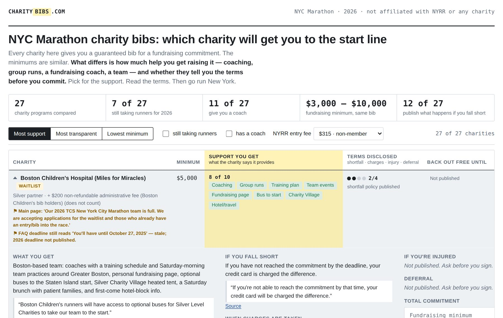

Product · Data · Shipped
A comparison site for charity bibs, the hypothesis it killed on the way, and the weekly pipeline that re-reads 27 charities' fine print so the table stays true.
In March 2026, 240,000 people applied to the New York City Marathon drawing. About 1% got in. The main remaining route is a charity bib: you promise to raise a minimum, usually $3,000–$5,000, and hand the charity a credit card. If you fall short, the balance is charged to it.
There are 670 official charity partners. Each has its own page, and each page tells you one number — the minimum. What it usually doesn't tell you is the thing that determines whether you'll make it: does this charity give you a coach, a team, a fundraising lead, or just a bib and a deadline? And whether it's even still taking runners. And what happens if life gets in the way.
I wanted to run for a charity and couldn't compare them. So I read all of them.
Twenty-two of 27 minimums sit between $3,000 and $5,000. Price is not what separates them. What separates them is that Boston Children's gives you coaches, Saturday team runs, a bus to the start and a heated tent, while another charity at the same minimum gives you a fundraising page and a shirt. That difference is the difference between $4,500 being doable and being miserable — and nobody publishes it side by side.
The terms are the other half. Of the programs that publish detailed terms, every one authorizes charging the runner's card for any shortfall. Fifteen of 27 publish no terms at all before you apply. The B.A.A.'s own charity application says you owe the full minimum "even if for any reason, including injury, you do not participate." That's the industry norm; almost nobody says it out loud.

One page. Every charity, sorted by how much help they give you, with a status pill so you know who's still open, four dots for how much of the commitment they disclose, and the date you can still back out for free. Expand a row and you get the exact clause, quoted, linked. Nothing is estimated — "not published" is a real value on this site, and it appears a lot.
The copy is written to help someone commit, not to scare them off. Pick for the support. Check it's open. Read the terms. Go run New York.
The first version of this page was about hidden cost. The thesis: a charity bib is a financial instrument sold as philanthropy — the minimum plus race entry plus non-creditable fees plus shortfall exposure — and if you sorted by what you'd actually owe, the ranking would change. I wrote a kill criterion before building:
At n = 27: six rows moved, mostly by one place. Exposure was the headline plus a near-constant $315. The column was true and useless. The criterion fired.
The cost research wasn't wasted. The shortfall clauses and charge schedules became the transparency layer under the support sort, and the "four questions to ask before you sign" card comes straight from it. I also de-weighted injury after checking the base rate — in a 735-runner NYC cohort, 40% got hurt in training but 4.1% were too hurt to race. One line in the row, not a column.
A table of terms that drifts out of date is worse than no table. So the data isn't maintained by hand. Every Monday a GitHub Action re-reads each charity's pages, extracts the same fixed fields, and then does the step that makes LLM extraction publishable:
crawl (Playwright, follows apply / FAQ / agreement / PDF)
→ extract (Claude, forced tool call against a fixed schema)
→ verify: every fact must carry a verbatim quote
found in the fetched text — or it is dropped
→ diff against what's published
→ open a pull request listing only what changed
→ a human merges. Nothing else reaches the site.
The model can misread a page. It cannot pass a number through this pipeline that it didn't find on the page, because the quote it supplies is string-matched against the text we downloaded. Seventeen tests, including a real headless crawl of a fixture site with a PDF agreement.
The same run caught a data error in my own first pass: the Team for Kids "$2,200" figure circulating in secondary sources is their Chicago program. NYC is $3,000. That's why every field links to its source.
I looked. Runner referral to charities already has a published clearing price — £25 per confirmed fundraiser at TimeOutdoors, with 20-year incumbents like Realbuzz behind it. Referred runners are adversely selected: a person picking a charity to get a bib has no cause affinity, and charities report runners who raise nothing at £400 sunk per place. The programs with money are oversubscribed; the ones that can't fill 3–15 bibs can't fund software. Small charities asked for exactly this marketplace in 2011 and got ad-supported directories instead.
So: no marketplace, no referral fee. A public utility with a verified dataset that costs about a dollar a week to keep honest. The value goes to runners directly — and, if charities notice their "terms disclosed" score, to the norm of publishing terms up front.
| Metric | Target | When |
|---|---|---|
| Outbound clicks to a charity page ÷ sessions | ≥ 8% | 30 days, then March 2027 drawing week |
| Sessions from search vs. from communities | search > 40% | March 2027 — the test of whether the domain aged |
| Correction turnaround | < 48h | Continuous, logged |
| Charities that publish terms after being listed | any | 2027 re-verification |
Traffic for this is a spike, not a curve. The right time to judge it is the week the 2027 drawing results land, and the domain is being aged for exactly that.